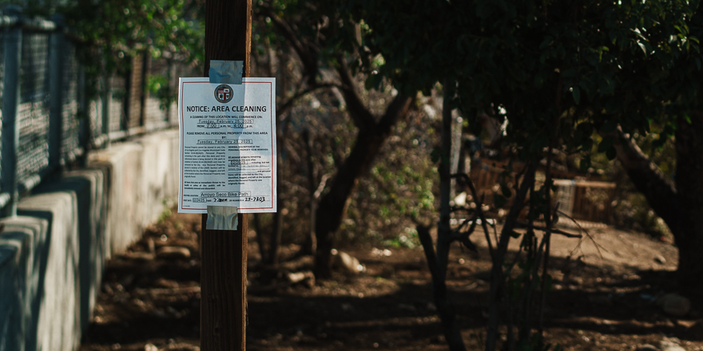

An Observer or Participant

Aaron began photographing after leaving his job in city government and using his savings to buy a camera. His neighbor, Frank Xochihua, had introduced him to photography years earlier by taking the photo used for Aaron’s brother’s tombstone.
He currently documents unhoused life along the Los Angeles River, focusing on the individuals and structures that exist outside of city-sanctioned housing. His work includes still photography, video, and field notes tied to specific locations and dates.
He was born and raised in Highland Park, Los Angeles. He briefly studied chemical engineering at UC Berkeley before dropping out. He later enrolled at Pasadena City College, where he began photographing regularly.
Aaron has worked as a decathlon coach, food cart attendant, casino chip collector, construction worker, environmental inspector, baby photographer, quinceañera photographer, and freelance photographer.
He has collaborated with Marylou Juarez, a film student at Cal State Long Beach, and is working with Jimmy, a Colombian art director from Clika Underground, on a documentary about immigrant encampments and law enforcement interactions along the river.
Process & Projects
This site is an evolving archive. It blends street photography, legal research, video, and oral documentation. It is directly informed by the documentary No Other Land and begins with the assumption that the most vulnerable must be attended to first.
The project focuses on the Los Angeles River, particularly the section near Highland Park. It examines how changes in infrastructure, policing, and demographics affect people living unhoused along the river. Each entry is tied to a specific date and location. Images and links are presented alongside public records and policy timelines.
The objective is to find observable patterns of state action and local neglect. This includes how encampments are removed, how residents are displaced, and how city policy is enforced or ignored.
The work is informed by a duty to love one's neighbor, as expressed by Søren Kierkegaard. Documentation is used here as a form of accountability and witness.
Contact & Involvement
If you have any questions or are interested in collaborating, you can reach me by email or Instagram:
Email: youremail@example.com
Instagram: @yourhandle
If you’re interested in volunteering, consider starting by simply stopping and talking to people who are living unhoused. Ask how they’re doing. Offer something if you can.
If you’re not comfortable doing that directly, there are organizations that work with residents along the Los Angeles River. One of them is Northeast Neighbors Organization (NENO), which helps provide food, supplies, and community support.